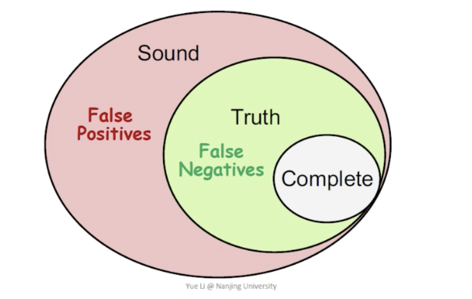
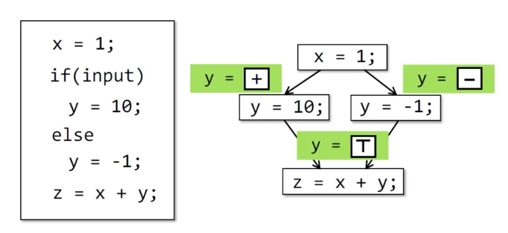
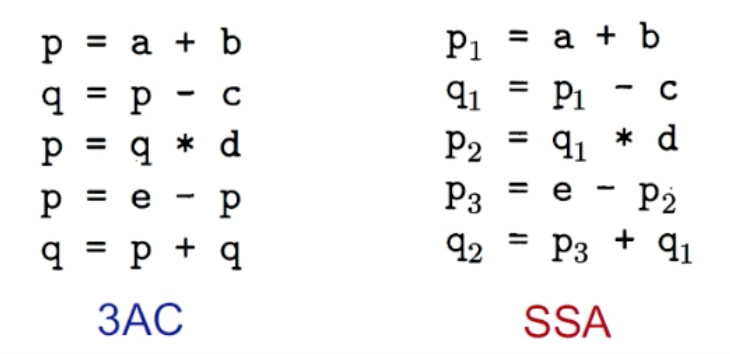
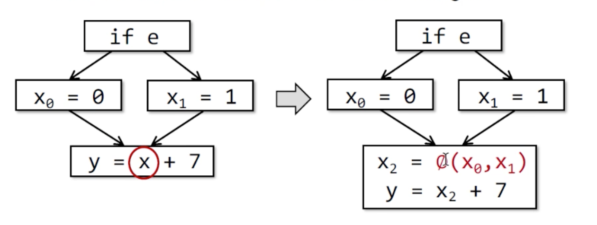
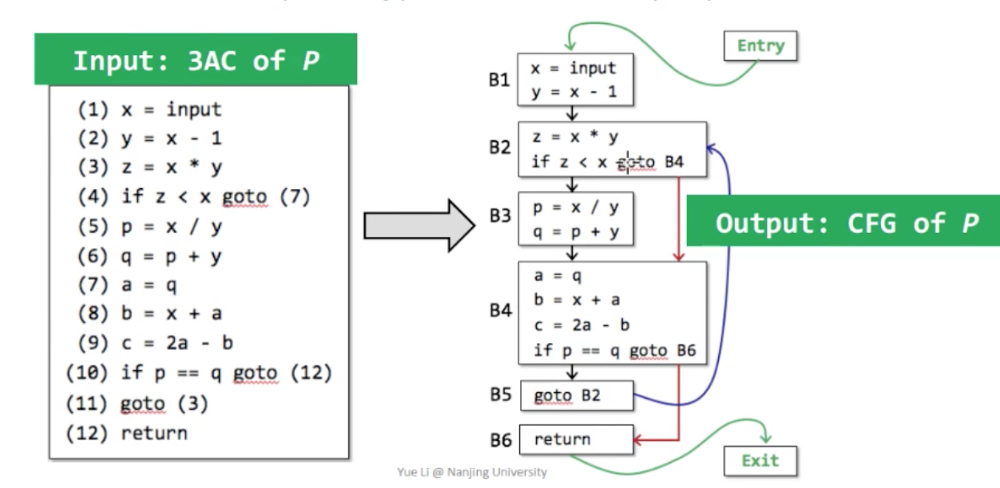

PL 领域目前主要关注三个方面的事情：
- Theory 理论：包括语言设计、类型系统、语义与逻辑
- Environment 环境：包括各种 Compiler、各种 Runtime System 运行时系统
- Application 应用：程序静态分析、程序验证、程序可靠性
Why We Need Static Analysis
- Program Relability：null pointer derefer、memory leak
- Program Security：private infro leadk、injection attack
- Compiler Optimization：dead code elim、code motion
- Program Understanding：IDEcall hierarchy、type indication
Static Analysis Intro
Any non-trivial property of this behavior of programs in a r.e language is undecidable.
不存在一种程序能够完美分析分析所有的 non-trivial 的特性。
- Sound （Overapproximate）—— 过量的
- Complete （Underapproximate）——过少的
- Truth （undecidable）——不存在的真实值

Sound but not fully-precise static analysis.
可以妥协误报而非漏报。
Abstraction 抽象
如何分析一段程序的符号（+，-，0），以一段程序运行为例：
Concrete Domain Abstract Domain
v = 1000 +
v = 1 +
v = 0 0
v = e ? 1 : -1 T (Top Or Unknown)
v = w / 0 ⊥ (Undefined)
静态分析是在分析程序的抽象表示而非原形式。
Over-Approximation 近似方法：Transfer Functions
- 针对程序之中的每一个语句提供抽象值的转换关系（taggless final 是好文明，确信）。
- 根据分析错误（analysis problem）和语义（semantics）共同决定 transfer-function 的构成。
Over-Approximation: Control Flows

Flow merging ：所有 Control Flow 汇聚的点都要能够抽象 or 近似。
Compilers and Static Analyzers
Source Code
-> Lexial Analysis (Regular Expression)
--Tokens--> Syntax Analysis (Context-Free Grammar)
--AST--> Type Checker (Semantic Analysis, Attribute Grammar)
--Decorated AST --> Translator
--IR --> **Static Analysis** -> Code Generator
-> Machine Code
AST vs IR
- 更高层级的语法结构 vs 更低级更接近 machine code
- 通常与语言相关 vs 通常是语言独立
- 适合快速的类型分析 vs 压缩和统一（uniform）
- 缺少 CFI（Control Flow Info） VS 静态分析的基本信息
IR（Intermediate Representation）
3 AC （3-Address Code）
三种类型
- Name: a, b
- Constant: 3, 4, const value
- Compiler-generated temporary: t1, t2
Common 3AC Forms
- bop: binary arith or logical operator
- uop: unary operator (-, !, cast)
- L: label
- rop: relational operator (<,>,==, etc.)
- Goto L, if … goto L: goto.
Soot
Soot is out of date…
- Invokespecial: call constructor, call superclass, call private methods.
- Invokevirtural: instance method call (dynamic dispatch)
- Invokeinterface: cannot optimization，checking interface impl
- InvokeStatic：call static methods.
- method signature: class name: return type.
SSA: Static Single Assignment
SSA 之中所有的 assignments （赋值）:
- 每一次赋值行为赋予一个新的变量名
- 在这个程序的整个生命周期内的任一变量仅有唯一的定义.

If 菱形分支

- 使用 phi-function 描述的 Phi 节点了来处理汇聚点
- Phi(x0, x1) 表示 CFA True 的时候走 x0, 否则走 x1
Why？Why Not？
优点：
- 程序流能够间接的合并进在
unique variable names，因此能够进行flow-insensitive的分析。SSA 上进行分析能够有效地利用并行化加快分析处理，相对而言也会降低精度（指可能引入过多的变量名和 Phi 节点，不过也有相应的优化算法）。 - 一些优化 SSA 上会更明显：常量传播、全局值分析
缺点：
- 可能引入过多的变量名和 Phi 节点
- 当 SSA –> Machine Code 可能会产生翻译错误
Control Flow Analysis
- IR to Control Flow Graph （CFG）
CFG 是静态分析的基本组成结构，CFG 中的节点可能是 IR 或是 Basic Block。

Basic Block
一个 IR 的基本块，入口唯一出口唯一。